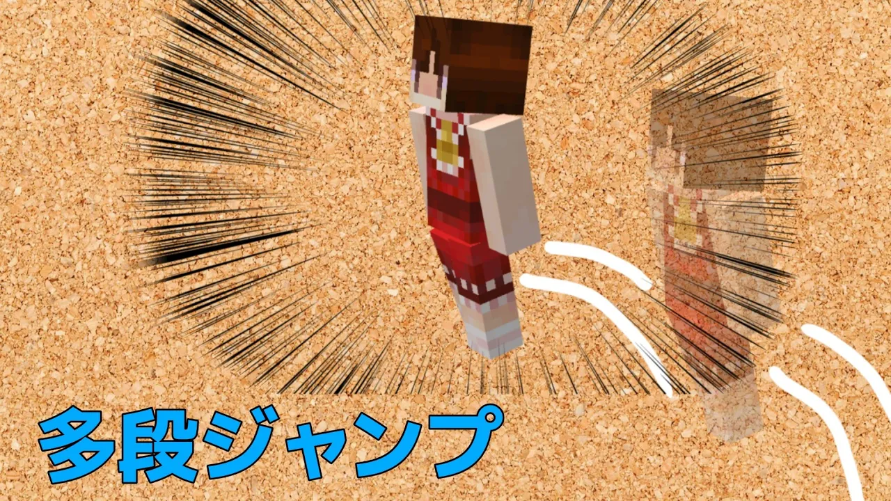

home
addons
tools
commands
STARのぺーじ
わたしが作った便利ツールとかアドオンとかのまとめサイト
多段ジャンプ

説明動画
コマンドコピー用
説明文を表示する
通常のジャンプの強化。2の部分を変えることで一段目のジャンプの強さを変えられる
effect @a[hasitem={item=elytra,location=slot.armor.chest}] jump_boost 1 2 true
エリトラを装備しているプレイヤーが地面についていたら空中でのジャンプの残り回数をリセット。ここの2が空中で飛べる回数になるので別の数に変えると飛べる回数が増える
execute as @a[hasitem={item=elytra,location=slot.armor.chest}] at @s unless block ~~-0.1~ air run scoreboard players set @s double_jump 2
浮遊エフェクトを1秒未満にするために浮遊エフェクトの削除を行う
effect @a[scores={db_jump=0}] levitation 0 255 true
浮遊の残り時間用タイマー
scoreboard players remove @a db_jump 1
エリトラ検知のコマンド。当たり判定が減っているかつ水中でない(水中だと泳ぎでも当たり判定が減るから)かつ多段ジャンプの回数が残っているときに浮遊用のタイマーのスコアを付与。ここの数字を変えれば浮遊効果の時間が変わるのでここで空中ジャンプの強さを変えることもできるが、ここで調整するのはあまりおすすめできない
execute as @a at @s unless entity @s[y=~1,dx=0] unless block ~ ~ ~ water if block ~~-0.1~ air run scoreboard players set @s[scores={double_jump=1..}] db_jump 3
浮遊タイマーが残っている間浮遊を付与。25の所が強さなのでここを弄れば空中ジャンプの強さが変わる
effect @a[scores={db_jump=1..}] levitation 1 25 true
ここからエリトラの強制解除機構。まずアドベンチャー→スペクテイターとスペクテイター→アドベンチャーを行い、それをクリエイティブ、サバイバルと順番に行うことで元のゲームモードに確実に戻せる
gamemode spectator @a[m=a,scores={db_jump=3}]
gamemode a @a[m=spectator,scores={db_jump=3}]
gamemode spectator @a[m=c,scores={db_jump=3}]
gamemode c @a[m=spectator,scores={db_jump=3}]
gamemode spectator @a[m=s,scores={db_jump=3}]
gamemode s @a[m=spectator,scores={db_jump=3}]
ここまでエリトラ強制解除機構
空中ジャンプを行ったときに残り回数を減らす
scoreboard players remove @a[scores={db_jump=3}] double_jump 1